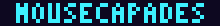
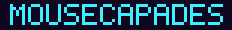

The goal
I wanted one short level, two or three minutes long, that feels amazing in the hands. It should have the momentum and inertia of Super Mario World: a run that builds up speed, a skid when you turn, and jumps you can shape by how long you hold the button. Content was secondary. If the movement didn't feel good, nothing else would matter.
It's also a portfolio piece, so it had to be honest work: original art, original sound, nothing borrowed from Nintendo.
Inspiration
The feel comes from SNES platformers. The look comes from neon city nights: deep purples, hot pink and cyan signage, with warm cheese-gold for anything you can collect. The heroine is a mouse girl with oversized pink ears and a red bob, small enough that the city always looks huge around her. Her crimson-and-plum palette pops against the purple night.
Key design decisions
1. Tune the feel by hand, not by guesswork
Movement numbers are impossible to judge on paper. The first thing built was a greybox test course and a tuning panel where every value is a live slider: walk speed, run speed, acceleration, friction, skid strength, gravity going up and coming down. I played, adjusted and played again until it felt right, then copied the values back into the game.

2. Forgiveness you never notice
Good platformers quietly cheat in the player's favor. You can still jump for a few frames after running off a ledge. A jump pressed just before landing is remembered. If her head clips the corner of a block, she slides around it instead of stopping dead. None of it is visible, but without it the controls feel unfair.
3. Show the speed
Running fills a six-segment meter, and when it's full she sprints and jumps further. The meter sits in the HUD, the camera leans ahead in the direction you're running, and the ground uses a subtle checker pattern so you can read your speed at a glance.
4. A level that teaches without words
There's no tutorial. An arc of cheese shows you the first jump. Pillars rise one tile at a time. Gaps grow from 3 tiles to 5. The runway is long enough to fill the sprint meter right before the first gap that needs it. The last Golden Cheese can only be reached by bouncing off a drone while holding jump, which is a secret that rewards players who experiment.

5. A logo that reads at a glance
The first title screen reused the tiny 3×5 font from the HUD. At logo size the M looked like an H, so "MOUSECAPADES" read as "HOUSECAPADES". I caught it in a screenshot review and drew a 5×7 font just for headings.


Working with AI
The code was written by Claude, directed by me. I own every decision on this page: the AI proposes, I choose, and anything that doesn't feel right goes back.
It worked because it described a feeling and a scope, not an implementation. The AI's answer was to build a tuning panel first and hand the final call back to me, which was exactly right.
Early on, the AI started tidying up the rest of my website when I'd only asked for the game. I pulled it back to one job at a time. Now every brief states its scope up front.
Drafts I rejected
- "Gutterlight." The AI's working title. Moody, but it said nothing about a mouse. Rejected.
- "Mouse Monogatari." One of my own ideas, but too niche: a recruiter needs to get the joke in half a second. Mousecapades won.
- A 3×5 pixel logo. The first title screen reused the HUD font, and the M read as an H. I redrew it in 5×7 (see above).
What broke, and how it got fixed
- A Golden Cheese nobody could reach. Scripted playtests showed the drone bounce peaked 3 pixels short of the third cheese. The bounce went up from 4.5 to 5.0, enough to reach it, while a normal jump still can't, so the secret stays a secret.
- The unreadable logo. See the before and after above.
Version history
- v0.1: Movement. Greybox test course, momentum physics, the live tuning panel.
- v0.2: A real level. Sector 1, enemies, cheese and item blocks, a checkpoint, the exit gate, title and win screens, sound effects.
- v0.3: Anywhere. On-screen touch controls so it plays on a phone.
- v0.4: Meet the heroine. The placeholder mouse is replaced by a full character sprite sheet (idle, walk, run, jump, hurt and defeat animations, plus expressions), cleaned up to a strict six-color palette.
What's next
- A power-up, with a hit that shrinks you instead of ending the run.
- A soundtrack, and a release on itch.io.
Want the details? Read the devlog: Tuning the jump.